Games Fraser Played in 2022
Welcome to my list of games I played in 2022! This one I did back when I was using that horrible website Twitter, which is why the reviews are so short. I really did try to go back to Xenoblade 3 but it was so overwhelming to jump into the middle of the game. It's just so loud with so many characters screaming.
Tunic
Similar to my favourite game the last two years, Outer Wilds, in this game you progress by gathering more knowledge as you play. It's so good, guys. It's such a satisfying game. I'm still thinking about it months later, it's my favourite game this year for sure
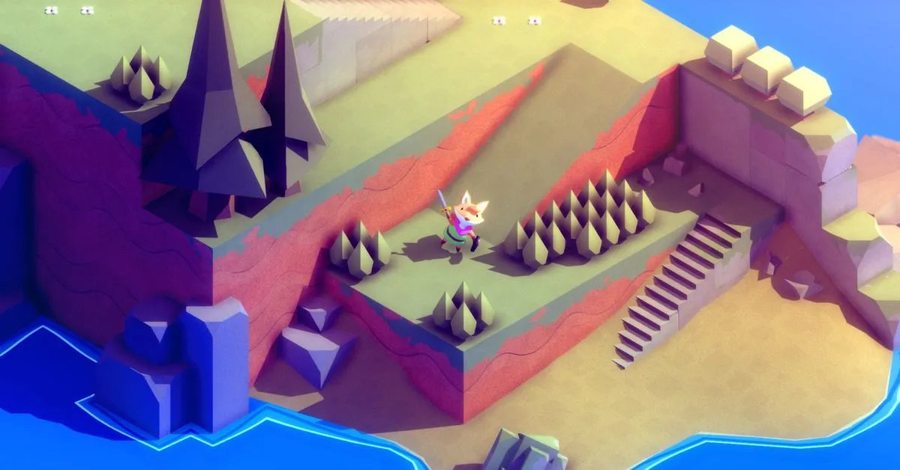Inscryption
As a lover of Slay the Spire, I was drawn to this story-driven card game. Yes it's creepy, but let me tell you it's worth your time. Don't read too much about it, just go in and enjoy all the twists the story has to offer - it's actually not as terrifying as it looks
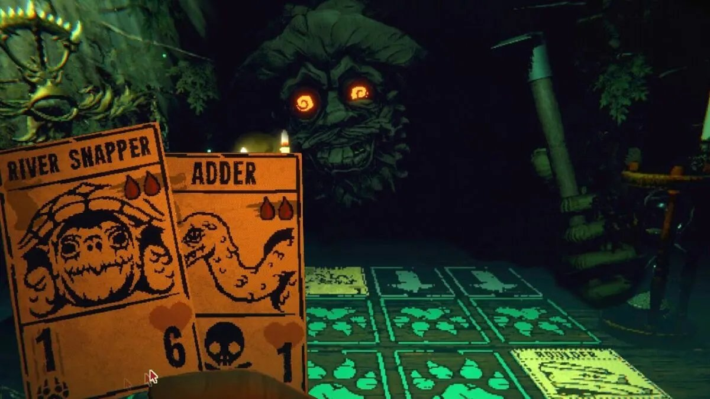Omori
This game was made with love. It's a story about being a recluse. It's very beautiful and the general vibe of the game with its presentation and music is top-notch. It's got that Earthbound energy which I always subscribe to. It's totally worth your time
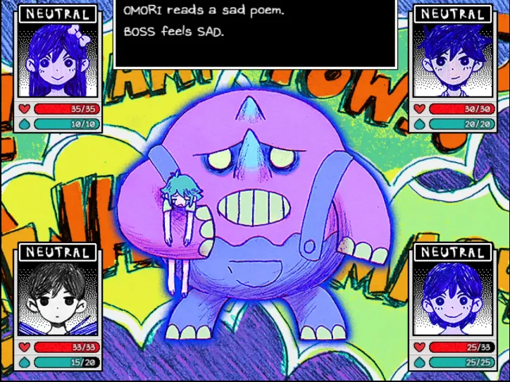Castlevania: Symphony of the Night
Went back and played one of the classics and boy do I love it. You'll see further in this list I played some more Castlevania but this is far and away the best one. It's so fun and I love the 18th Century setting. Love the twist halfway through
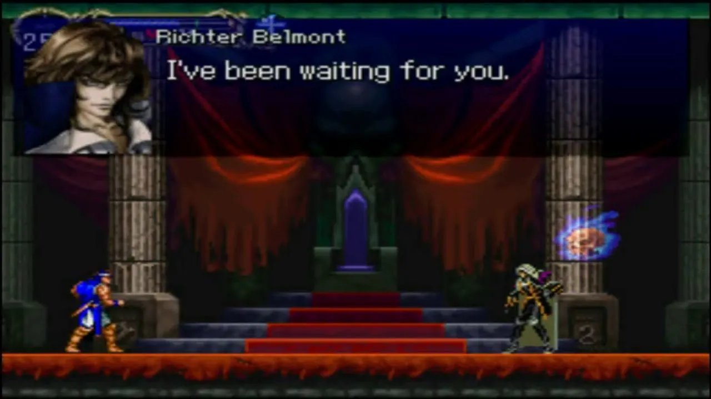Everhood
This is a banger game. It's a rhythm game (always love a rhythm game) with a story & vibe which is undeniably similar to Undertale. If you're craving that kind of wacky, dark story along with very imaginative design and a cracking soundtrack, I highly recommend it
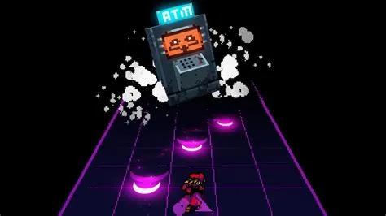Paradise Killer
Alright I'll straight up say that this game isn't a GOOD game per se… but I still rank it high because I love the vibe, the look, the music. If you don't have time to play this visual novel, I forgive you, but do take the time to listen to the soundtrack
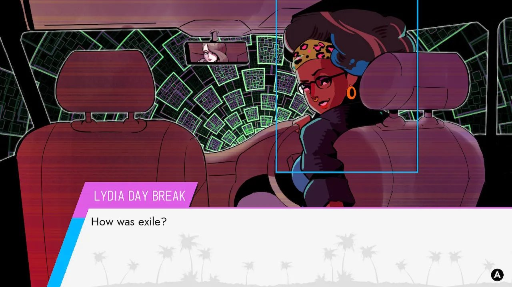Chicory: A Colorful Tale
I came because I'm a massive Lena Raine fan and she did the soundtrack. The game is surprisingly good for a painting game! All the characters are named after food items and I named myself Aubergine which I thoroughly enjoyed the whole game
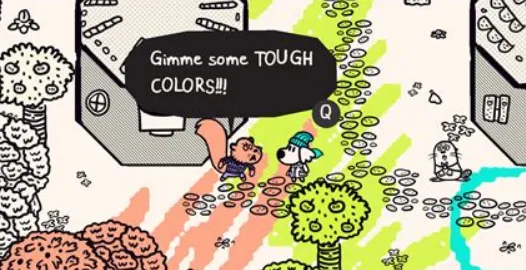Elechead
This is a super fun 3 hour platforming experience. It's a super tight, well designed little package of fun. Each puzzle makes you feel like a superstar for beating it, it's so satisfying. Give it a try!
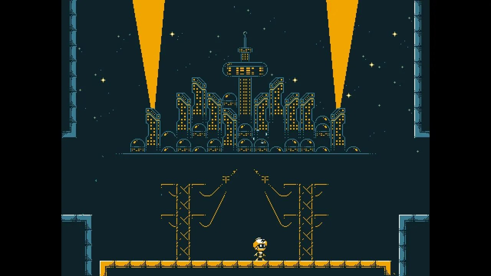Slice & Dice
It's a mobile game! Yep. Worth it. It's a super well designed little dice-based roguelike, and I got really into it this year. You can just jump in and play for a little bit at a time, and it scratches that Slay the Spire itch. Recommend
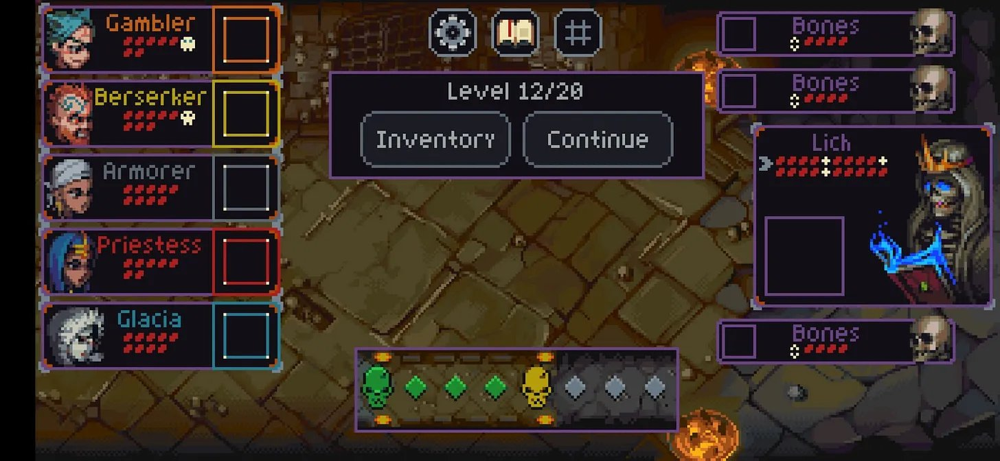Kirby and the Forgotten Land
This is a great kirby game! Perfect for playing with your partner. Co-op kirby is such a pleasure. It's very cute! I'm impressed that they came up with the name Mouthful Mode and just made a kirby game out of it
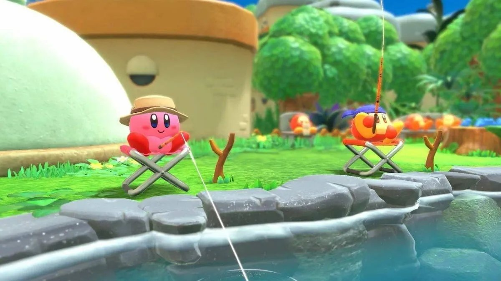Elden Ring
I gave this game, a very different kind of game for me, a good go! I recognise that it's amazing. I especially enjoyed the look and the vibe and the world. But I couldn't make it past the multiple barriers of entry. Beat Rennala and called it a day
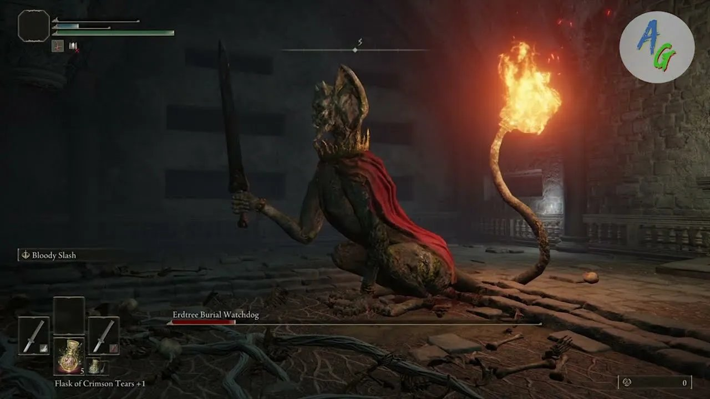Xenoblade Chronicles 3
I'm still working my way through this one! Promised myself I wouldn't play long games but here I am. I enjoyed 1 & 2 and this one is going pretty strong (I'm at chapter 4). My fave thing about this series is the regional accents and Eunie is a total babe
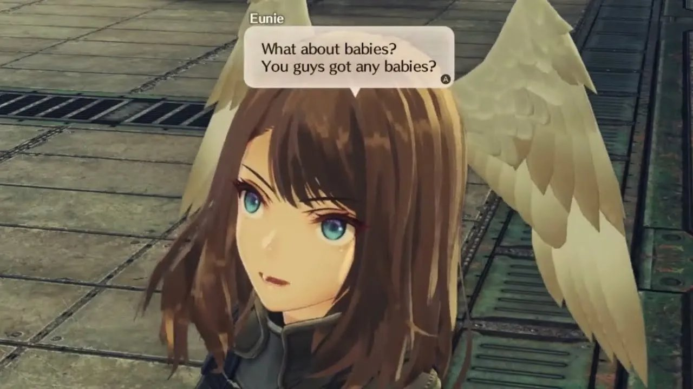Persona 5: Royal
Speaking of long ass games, for some reason I completed all of this one. It was a great game for the first 40 hours or so but my dumbass finished all 100 hours out of pure spite. But “Last Surprise” never gets old, and Kasumi is cute
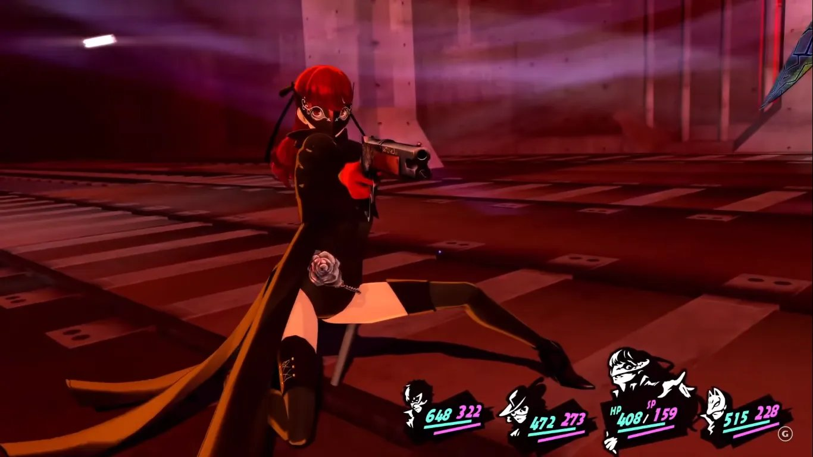Scarlet Nexus
I was jamming to this OST for months before I decided to give the game a spin. It's pretty middle of the road in terms of gameplay, especially for me as I'm not a hack & slash fan. But I love games with good vibes and this one has a great vibe and I enjoyed it
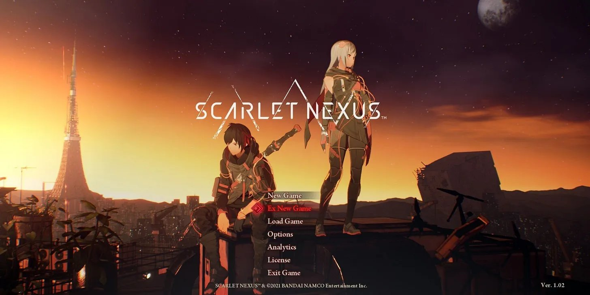Valheim
I had the pleasure of sharing a Valheim server with my friend Falco and his buddies. My little computer didn't have the strength to properly compute this game but I still enjoyed building a little house and riding the boat with some cool dudes
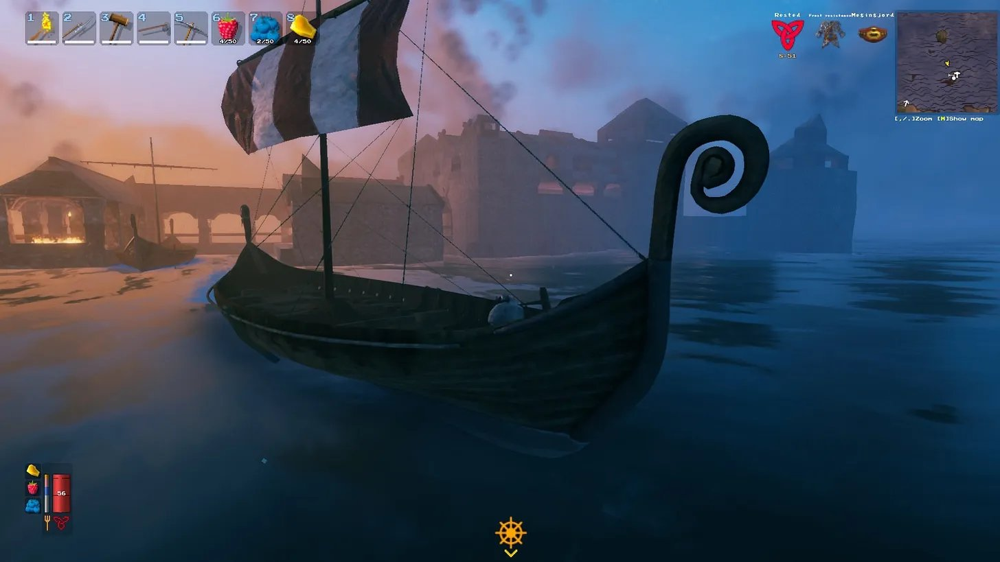Boomerang Fu
A super fun party game on switch to enjoy with your family. It's got similar vibes to Towerfall, which is great. It's not the best best best or anything but still worth your time and money for sure
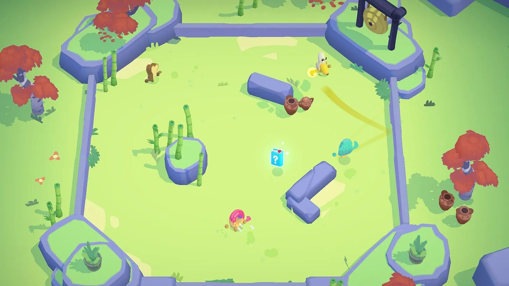Psychonauts 2
I felt like this game was a game with some content in it. I made it through to the end but it didn't make me feel much. Maybe I would have enjoyed it more if I were a child. I think I liked the first one because I was younger when I played it
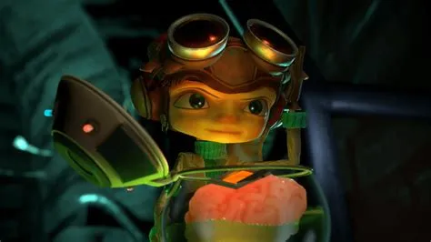Gorogoa
This is a little puzzle game that you can breeze through in one sitting. It's good!

Super Castlevania 4
It's my goal to complete the games that all the smash characters are from (hence Persona 5!) and to that end I got the Castlevania collection on switch. This game is great but it's hard as balls. I was only able to complete it because I used save states
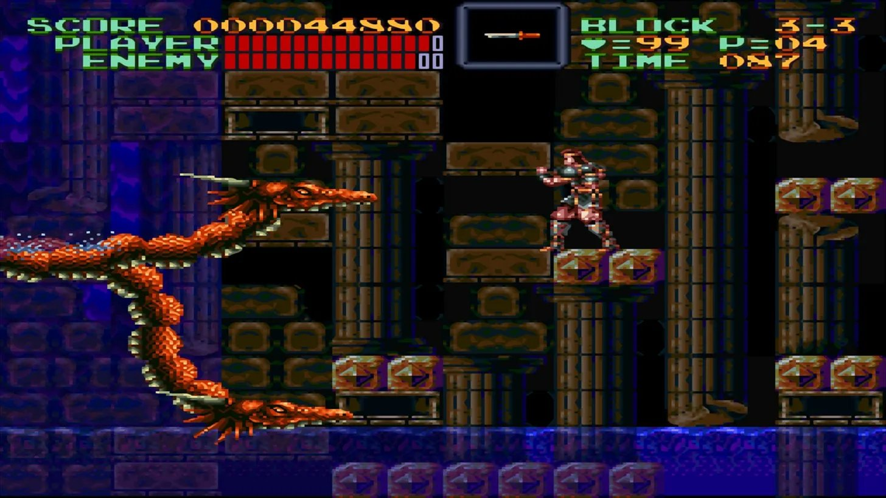Castlevania (NES)
Decided to take the time to save-scum my way through the OG Castlevania in honour of the OG Simon Belmont. Even harder than the other one but had to do it for my education
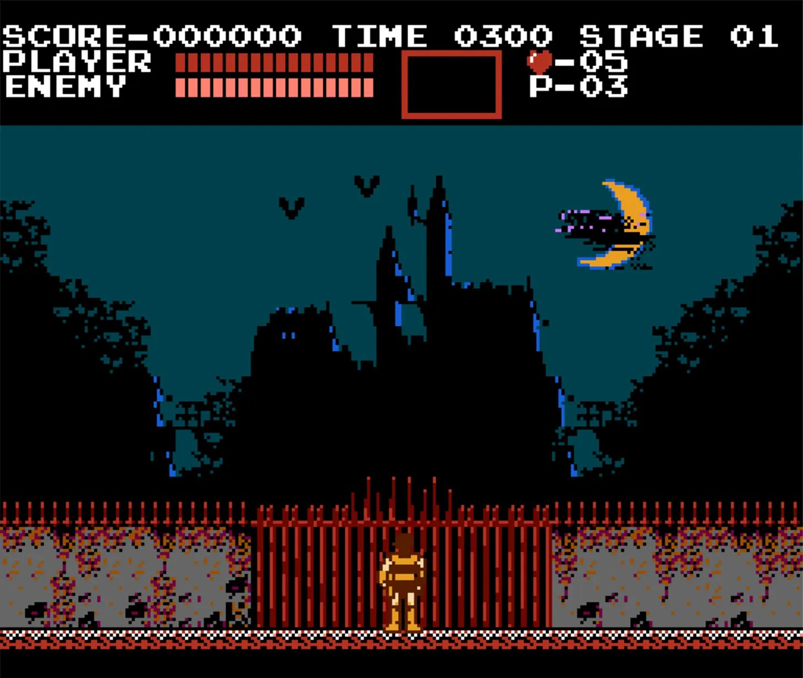Castlevania Rondo of Blood
Gotta play Richter's game too. I had to get a separate collection on playstation for this one, which is fine except that this one doesn't come with save states, so I actually got straight up stuck against Death. I couldn't beat him so I gave up
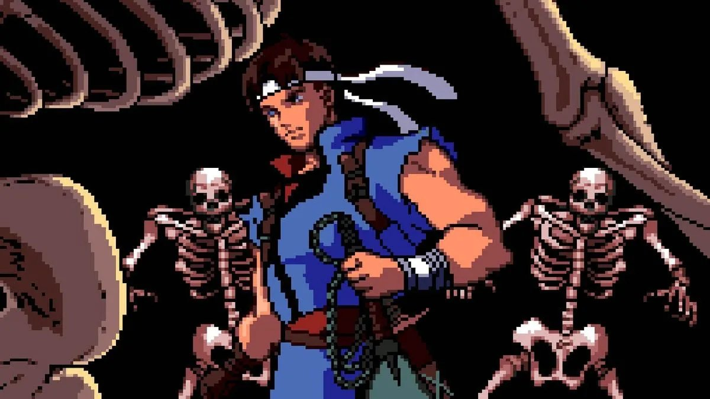Kirby's Dream Buffet
It was a fun time playing this online with friends! However it doesn't have too much depth as a game and we only played it once.
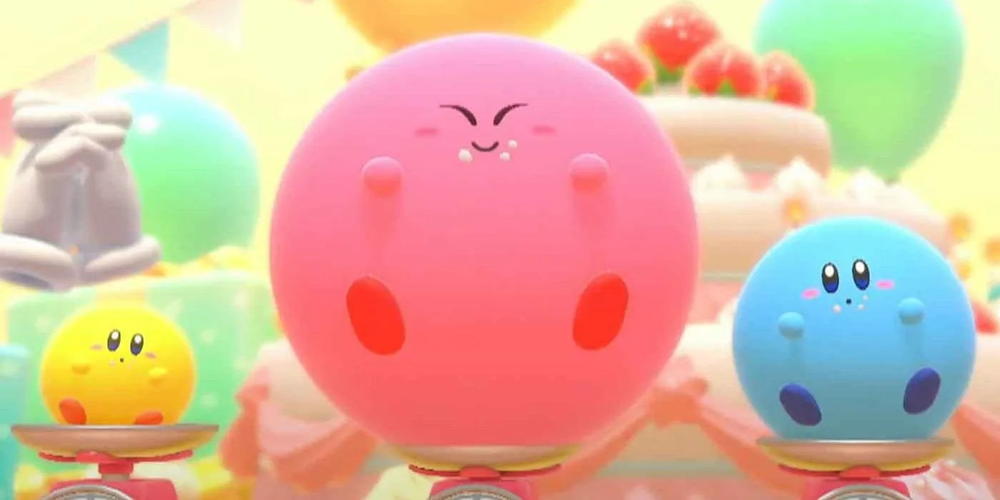Spiritfarer
I do enjoy a peaceful game with good vibes only and this is that. I didn't see it through to the end however because the gameplay loop didn't hook me in. It looks great though. You can fish off the end of the boat and just doing that is the highlight of the game
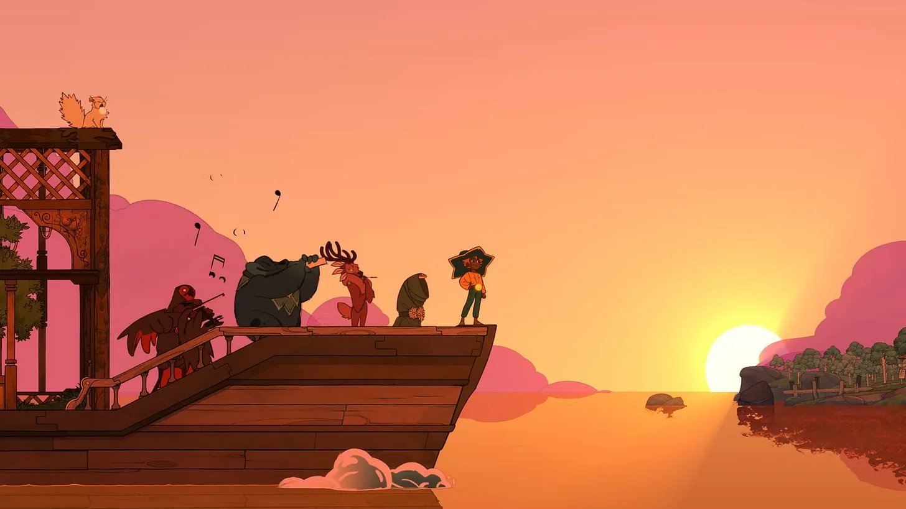Mario Strikers: Battle League
A great party game when you have the full 8 players. We had a great time with it and the animations for the characters are fun. However there isn't much meat on the bones. I don't think it's worth buying, it wouldn't be fun on your own
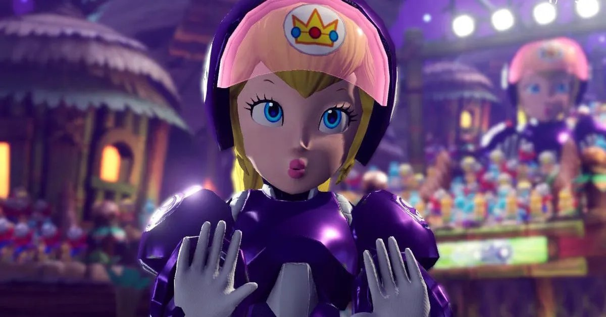Rain World
This is a survival game with some of the craziest enemy AI I've ever seen. I recognise that this is a good game. However, I found it so fucking terrifying that I had to stop playing. The monsters were so scary and sometimes it would start raining and jesus christ.
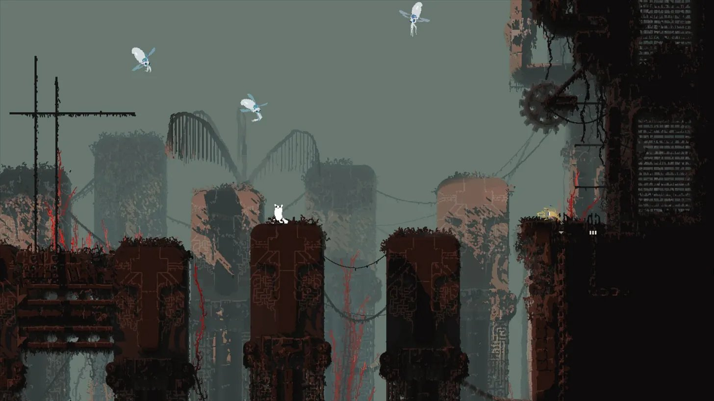Pokemon Legends: Arceus
I hate to be that bitch but I couldn't enjoy this game because the graphics were so bad. And I resented how the pokemon would sit around in groups and do nothing. It was better in pokemon snap when they actually did stuff
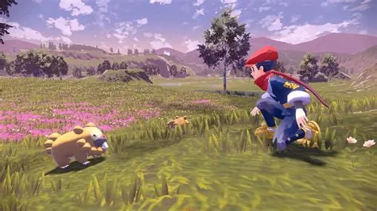Wandersong
It's a game about singing but it was really boring! I thought you couldn't really go wrong if your premise was to sing to solve puzzles but yep, I switched off pretty quickly
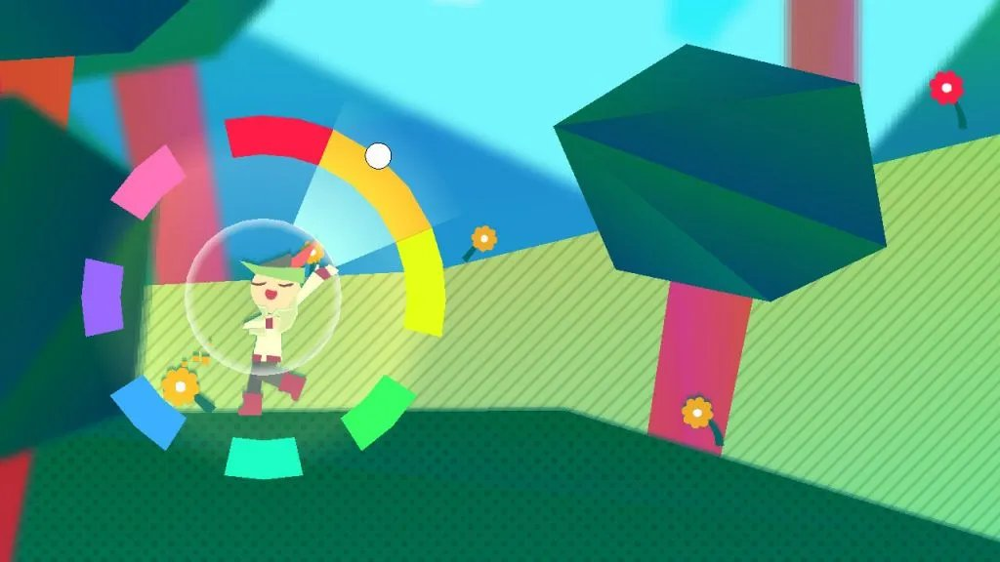LISA: The Painful
I'm sure this game is good… but it just has such a horrible vibe. It's miserable and it was upsetting me too much
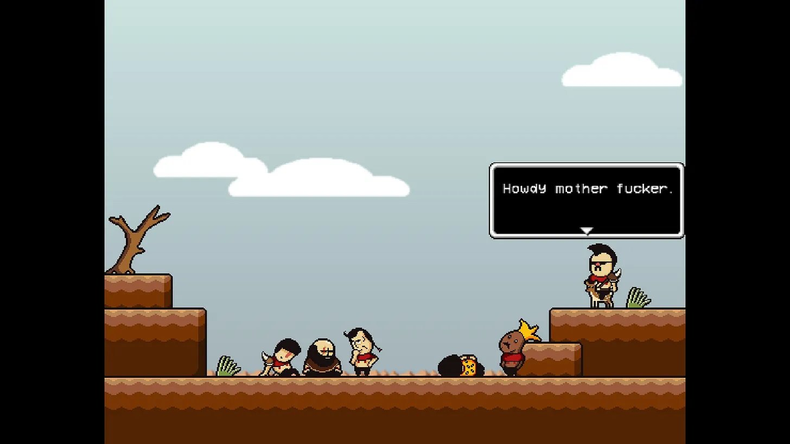Pac-Man World: Re-Pac
Oh boy, this is a genuinely bad game. It didn't age very well. For some reason I completed it… it's that part of me that wants to play all the games of smash characters. By the end I was incredulous that a) it was real and b) I was still playing it
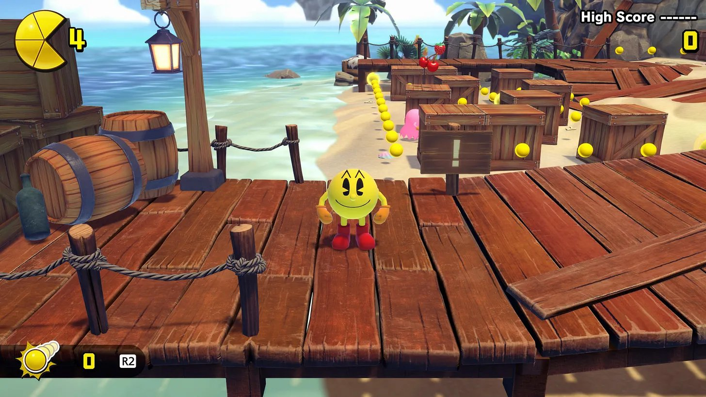Sports Story
This game is straight up unfinished. It's almost embarrassing! It's a technical mess. Golf Story was such a banger with such clean gameplay, so what went wrong? Why does golf have fewer features and why is the whole thing so glitchy and unpolished? I hope they fix
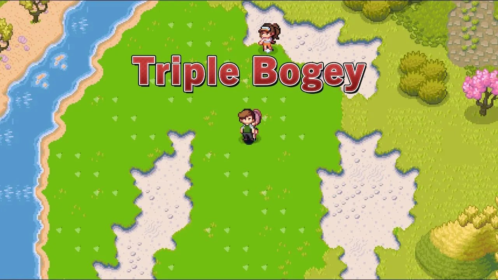Loop Hero
I picked it up because it looked innovating and new. But it's almost like they didn't think their loop concept through enough! It felt unbalanced and pointless. Why is there even a loop?
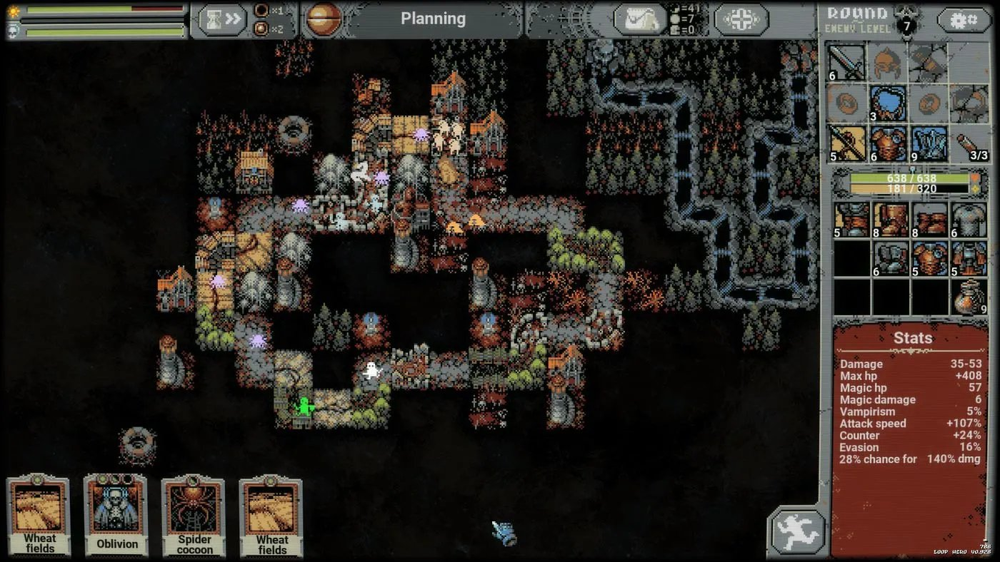Unpacking
Do not play this game. It's literally just work. You pay money for a “game” where you have to unpack things from boxes. Who actually enjoys doing that. This isn't how you tell a story. Don't buy it
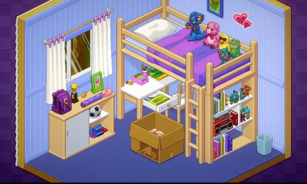